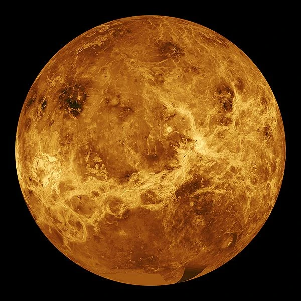

Curiosidades do Sistema Solar

Sol
O Sol representa cerca de 99,86% de toda a massa do Sistema Solar. Ou seja, praticamente tudo gira em torno dele
Ele é a fonte primária de energia para a Terra e os outros planetas do Sistema Solar, sustentando a vida e influenciando o clima e as condições atmosféricas

Saturno Flutua?
Saturno é tão leve (em densidade) que teoricamente flutuaria em um oceano gigante de água
Saturno tem uma densidade média de cerca de 0,69 g/cm³, o que é menor do que a densidade da água (1 g/cm³), na teoria é dito que ele flutuaria se existisse um gigante oceano o suficiente para suportar seu peso

Vênus Infernal
Vênus é mais quente que Mercúrio, mesmo sendo mais distante do Sol, por causa do efeito estufa extremo
O motivo? é o efeito estufa extremo causado pela atmosfera densa de vênus, o alto nivel de dióxido de carbono aprisiona o calor, fazendo com que as temperaturas em Vênus sejam mais altas do que em Mercúrio

PIASTRI OOOOO
Um dia em Vênus dura mais do que um ano no próprio planeta. Ele gira muito lentamente.
Saturno tem uma densidade média de cerca de 0,69 g/cm³, o que é menor do que a densidade da água (1 g/cm³)